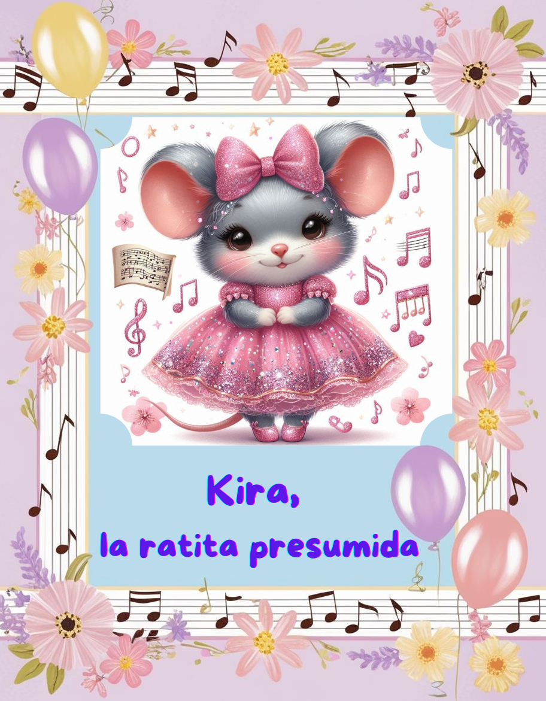

Kira, la ratita

Sigue a Kira, una ratita soñadora, en una historia llena de música, amistad y alegría bajo tierra...
Edad recomendada: 4-8 años
Valores: Amistad, Empatía, Perseverancia, Alegría, Creatividad
🎶 ** Kira, la ratita ** 🎶